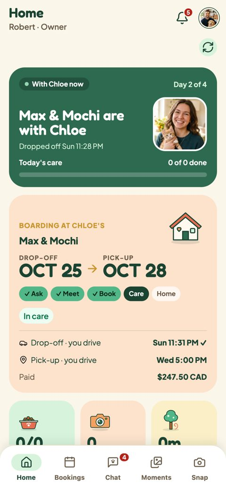

Owner Home flips between Today (the stay) and Max's room (the pixel pet). Today the only way across is a refresh icon with no label. Five ideas below, each playable: tap the control, swipe the screen, or use the trackpad sideways. Every idea keeps the swipe.오너 홈은 Today(스테이)와 Max's room(픽셀 펫) 사이를 뒤집어요. 지금은 라벨 없는 새로고침 아이콘 하나뿐이에요. 아래 다섯 가지 안은 모두 직접 눌러볼 수 있어요. 버튼을 누르거나, 화면을 옆으로 밀거나, 트랙패드로 옆 스크롤. 스와이프는 모든 안에 그대로 있어요.

| Findable발견성 | Says where it goes목적지 표시 | Delight재미 | Space공간 | Build (Pager.tsx)구현 (Pager.tsx) | Watch out주의 | |
|---|---|---|---|---|---|---|
| A Labeled switch라벨 스위치 | ●●● | ●●● | ●●○ | Same row, now full같은 줄, 꽉 채움 | Small: swap the button for SegmentedControl작음: 버튼을 SegmentedControl로 | Reads like tabs; fine, it is two views탭처럼 보임. 두 화면이라 괜찮음 |
| B Peeking pet빼꼼 펫 | ●●○ | ●●○ | ●●● | Frees the row줄 없앰 | Medium: floating button + bubble rules중간: 떠 있는 버튼 + 말풍선 규칙 | Can cover content; hide while scrolling내용을 가릴 수 있음. 스크롤 중엔 숨김 |
| C Corner curl모서리 접기 | ●○○ | ●●○ | ●●● | Frees the row줄 없앰 | Medium: corner art, drag from the corner중간: 모서리 그림, 모서리 드래그 | Small target; easy to miss without the nudge작은 타깃. 넛지 없으면 놓치기 쉬움 |
| D Swipe peek + dots스와이프 힌트 + 점 | ●●○ | ●●○ | ●○○ | Same row, centered같은 줄, 가운데 | Small: dots + one tease animation작음: 점 + 힌트 애니메이션 | A flip, not a slide, so the peek is a white lie실제는 뒤집기라 밀기 힌트와 약간 다름 |
| E Named flip button이름 붙은 버튼 | ●●○ | ●●● | ●●○ | Same row, same spot같은 줄, 같은 자리 | Smallest: icon + label in the existing button가장 작음: 기존 버튼에 아이콘 + 라벨 | Still one lonely button in a row여전히 한 줄에 버튼 하나 |
A labeled switch fixes all five problems with the smallest change: it names both sides, fills the row it already uses, and reads correctly to screen readers. Max's face in the switch hops on the first visits and gets a dot when there's news. B's peek joins only while Max has news, so it stays a treat and not furniture. For the build: Pager.tsx swaps the refresh button for a SegmentedControl with both labels, and Home adds the peek when the pet has unread news.라벨 스위치는 가장 작은 변경으로 다섯 문제를 모두 해결해요. 양쪽 이름이 보이고, 이미 쓰는 줄을 채우고, 스크린 리더에도 정확해요. 스위치 속 Max 얼굴이 처음 몇 번 통통 뛰고, 소식이 있으면 점이 붙어요. B의 빼꼼은 Max에게 소식이 있을 때만 나와서 늘 있는 장식이 아닌 깜짝 선물로 남아요. 구현: Pager.tsx의 새로고침 버튼을 두 라벨 SegmentedControl로 바꾸고, 홈은 펫에게 안 읽은 소식이 있을 때 빼꼼을 더해요.